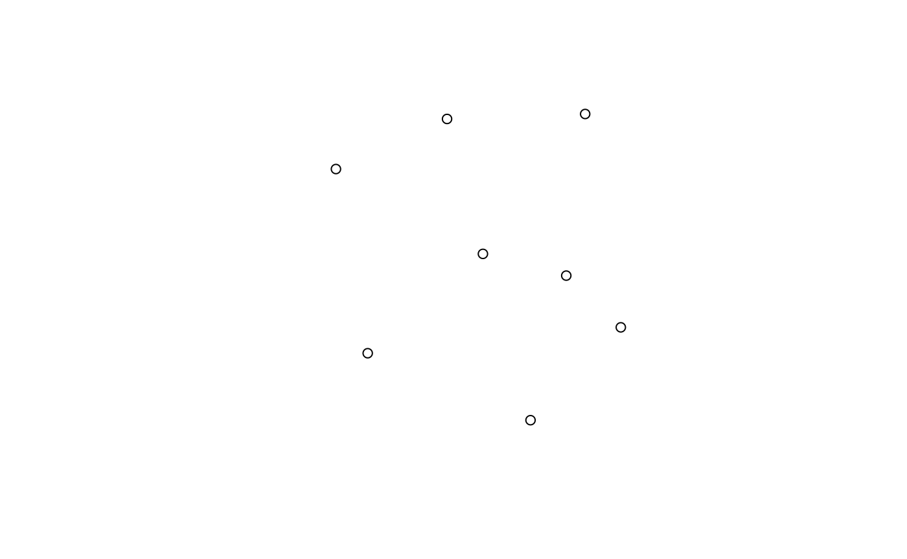
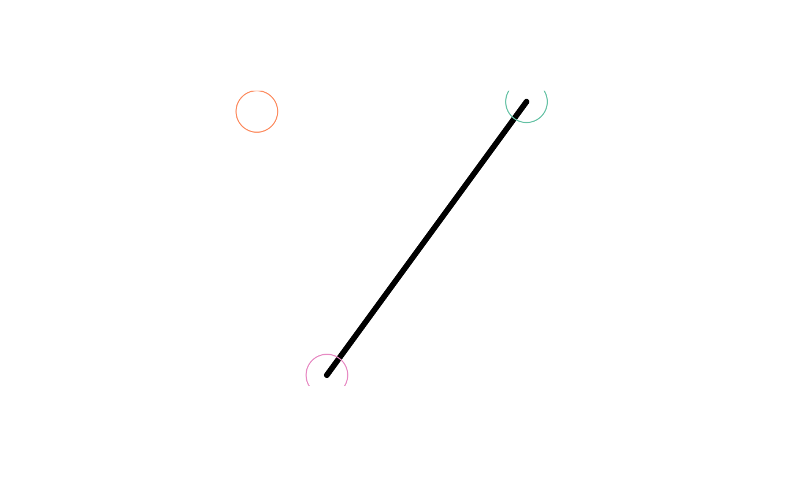
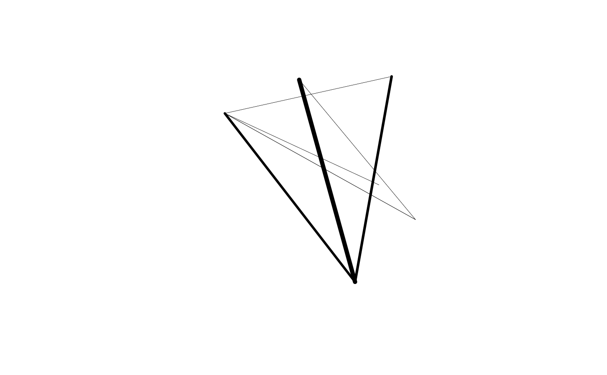
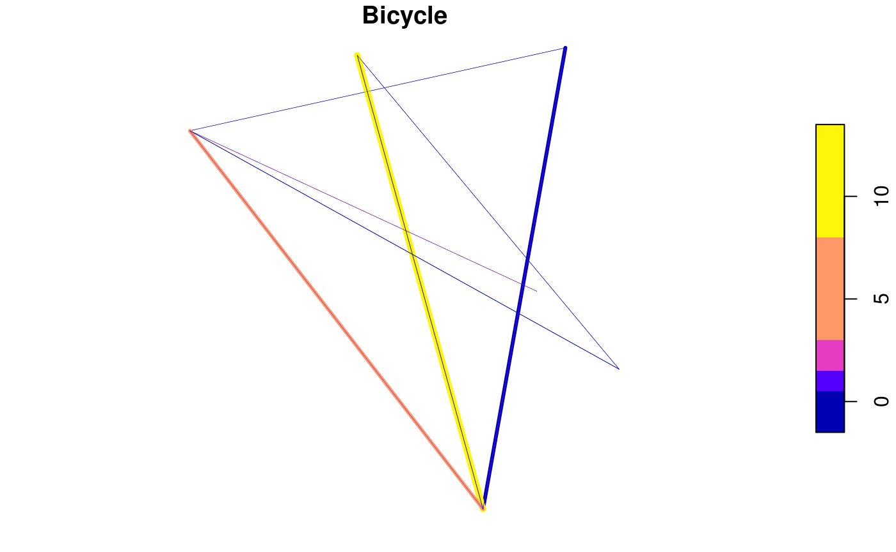
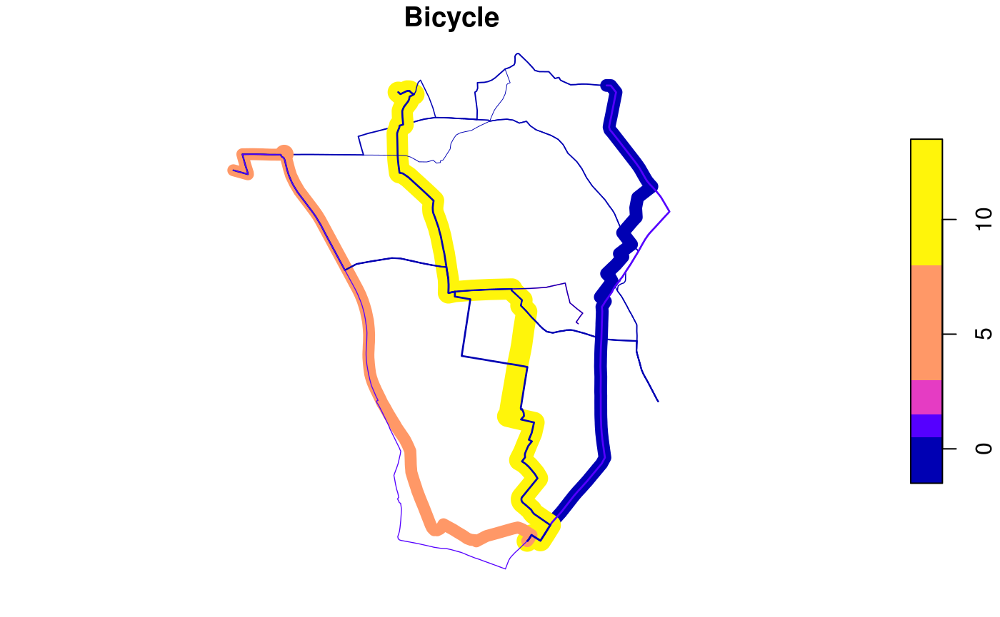

Introduction
The purpose of this vignette is to get you up-to-speed with the basics and provide useful links for doing transport research with R.
Initially, stplanr was developed to solve a real world problem: how to convert official data on travel behaviour into geographic objects that can be plotted on a map and analysed using methods from geographical information systems (GIS)? Specifically, how can origin-destination (OD) data, such as the open datasets provided by the UK Data Services WICID portal (see wicid.ukdataservice.ac.uk/), be used to estimate cycling potential down to the street levels at city and national levels? The research project that the initial work on stplanr was funded by was called the Propensity to Cycle Tool (PCT), which has now been deployed as a web application hosted at www.pct.bike and written-up as an academic paper (Lovelace et al. 2017).
Since this basic functionality has been implemented (with the function od2line()) there have been many further developments in stplanr. The package was reviewed through the rOpenSci package review process (see here for the details) and the package is now hosted on their site. See the website at ropensci.github.io/stplanr. A more detailed overview of the package’s aims and capabilities is contained in a longer vignette, which has since been published in the R Journal (Lovelace and Ellison 2018).
Installing stplanr
If you’re new to programming and transport data, we recommend using stplanr interactively in an Integrated Development Environment (IDE) such as RStudio to make life easier. Steps to set-up a suitable R/RStudio environment are described in the package’s README. Broader guidance on R set-up can be found in sections 2.3 and 2.5 of the book Efficient R Programming (Gillespie and Lovelace 2016).
Once you have an R set-up you are happy with, the latest version can be installed from CRAN in the usual way:
The development version can be installed as follows:
Load the package as follows:
stplanr contains many datasets for testing and demonstrating how R can be used for transport planning. The names of these datasets (which are loaded ‘lazily’ into your namespace when you attach stplanr) are listed below:
## [1] "ca_local" "cents" "cents_sf"
## [4] "destination_zones" "destinations" "destinations_sf"
## [7] "flow" "flow_dests" "flowlines"
## [10] "flowlines_sf" "l_poly" "od_data_sample"
## [13] "osm_net_example" "route_network" "route_network_sf"
## [16] "routes_fast" "routes_fast_sf" "routes_slow"
## [19] "routes_slow_sf" "zones" "zones_sf"A more complete list of functions in the package can be found here: https://ropensci.github.io/stplanr/reference/index.html.
OD data to desire lines and routes
Transport data can take many forms. R is an appropriate language for handling transport data, as it can read-in data in such a wide range of formats, e.g. with packages such as haven and foreign. This section focusses on OD datasets, and their conversion to desire lines and routes because these are foundational data types for many transport research applications. (stplanr also contains functions for: the analysis of road traffic casualty data, interfacing with various routing APIs, ‘travel watershed’ analyis and access to Google’s Travel Matrix API.)
Origin-destination (OD) data is simply data in the following form:
od_eg = read.csv(text =
"origin, destination, V1, V2
1, 2, 100, 3
1, 3, 50, 5"
)
knitr::kable(od_eg)| origin | destination | V1 | V2 |
|---|---|---|---|
| 1 | 2 | 100 | 3 |
| 1 | 3 | 50 | 5 |
What this example OD table means is that 100 units of ‘V1’ and 3 units of V2 travel between zone 1 and zone 2. There is also movement represented between Zone 1 and 3.
This dataset can also be represent as an ‘od matrix’, where rows represent the origins and columns destinations. However, for multiple variables (e.g. modes of transport) and to prevent giant and unwieldy sparse matrices, the ‘long’ form represented above is much more common.
Now, imagine that V1 represents the total number of people travelling between the origin and destination and that V2 represents the number who regularly cycle. From this we can get a good indication of where people cycle at the desire line level. (Note: a good source of open OD data has been made available from the wicid.ukdataservice.ac.uk website).
To extract useful information from this OD dataset, we need to be able to place the lines on the map. What kind of place does a desire line originate from? What about the destination? What is the environment like that it passes through? To answer all these questions we need a geographic representation of the OD table illustrated above.
Converting OD data to desire lines with R
One problem with OD data is that the rows do not tend to have geography inherently built in. They could contain a variables called lat_origin, lon_origin, lat_destination and lon_destination. But generally they only contain the IDs of geographic zones.
Work is needed to convert the OD data into ‘desire lines’. Desire lines are straight lines between the origin and destination and represent where people would go if they were not constrained by the route network (see Figure 3 from this paper).
To show how these desire lines are created, we’ll switch to using real OD data provided by stplanr. The first three of these is shown below:
## Area.of.residence Area.of.workplace All Bicycle
## 920573 E02002361 E02002361 109 2
## 920575 E02002361 E02002363 38 0
## 920578 E02002361 E02002367 10 0
## 920582 E02002361 E02002371 44 3
## 920587 E02002361 E02002377 34 0
## 920591 E02002361 E02002382 7 0This shows that, between zone E02002361 and E02002361 (i.e. intrazonal flow) there were 109 people travelling to work by all modes in the 2011 census. 2 of them cycled. The equivalent numbers for the OD pair E02002361 to E02002371 were 44 and 3. But how to make this data geographical?
For that we need another dataset, also provided by stplanr:
## Simple feature collection with 6 features and 4 fields
## geometry type: POINT
## dimension: XY
## bbox: xmin: -1.550806 ymin: 53.8041 xmax: -1.511861 ymax: 53.82887
## epsg (SRID): 4326
## proj4string: +proj=longlat +datum=WGS84 +no_defs
## geo_code MSOA11NM percent_fem avslope geometry
## 1708 E02002384 Leeds 055 0.458721 2.856563 POINT (-1.546463 53.80952)
## 1712 E02002382 Leeds 053 0.438144 2.284782 POINT (-1.511861 53.81161)
## 1805 E02002393 Leeds 064 0.408759 2.361707 POINT (-1.524205 53.8041)
## 1925 E02002367 Leeds 038 0.591141 5.091685 POINT (-1.550806 53.82442)
## 1928 E02002363 Leeds 034 0.525161 3.076791 POINT (-1.535617 53.82847)
## 1930 E02002361 Leeds 032 0.511777 3.589363 POINT (-1.516734 53.82887)The cents dataset is spatial, illustrated by it’s class: a SpatialPointsDataFrame, from the sp package. Because stplanr loads sp, the dataset will be plotted as a map by default, as illustrated below:
## Linking to GEOS 3.5.0, GDAL 2.2.2, PROJ 4.8.0
stplanr creates desire lines using the od2line() function, which links geographical and non-geographical datasets together. In this case, it will join the non-geographical flow data with the geographical cents data plotted above. Let’s take a single OD pair, E02002361 to E02002371, the fourth row represented in the table above, to see how this works:
flow_single_line = flow[4,] # select only the first line
desire_line_single = od2line(flow = flow_single_line, zones = cents)This can be plotted as follows:
desire_line_single = st_as_sf(desire_line_single)
plot(st_geometry(desire_line_single), lwd = 5)
plot(cents_sf, add = TRUE, cex = 5)## Warning in plot.sf(cents_sf, add = TRUE, cex = 5): ignoring all but the
## first attribute
Note that the R function od2line() is generic in the sense that it will work the same if you give it a single OD pair or a table representing thousands of desire lines. The following command creates desire lines longer than than 2km in distance via the geo_length() function — omitting ‘internal flows’ via the sel object below — represented in the dataset flowlines:
l = od2line(flow = flow, zones = cents_sf)
# identify 'intrazone flows'
sel_intra = l$Area.of.residence == l$Area.of.workplace
# find distances
l_distances = geo_length(l)
summary(l_distances)## Min. 1st Qu. Median Mean 3rd Qu. Max.
## 0 1097 1466 1520 2285 2935This creates the geographic data object l, which can be visualised as follows:
Now the data is set-up, we can change the visual appearance of the desire lines with a single extra argument passed to the plotting function. Let’s make width depend on the total number of people travelling along the desire line:

Another useful visulisation involves setting the colour relative to the number of people cycling:

Finally, we can convert these desire lines into routes as follows (other route_* functions can be used, but may require API keys to work - see ?route_cyclestreets for details):
## [1] TRUE## [1] 0if(has_internet & cs_key == 32) {
r = line2route(l, route_fun = route_cyclestreets)
} else {
r = routes_fast[sel, ]
}These routes contain the same information on origin and destination, but have additional spatial information about the route network. The routes can be plotted in the same way as the desire lines were plotted, (with buildings shown for context):

The next stage is to aggregate these lines together to create a ‘route network’. This, and many other functions, are described in the stplanr-paper vignette.
Context and discussion
This section outlines some of the wider motivations underlying the package.
As settlements worldwide have grown and become more complex, the process of planning has had to adapt. Planners today are specialists, in sub-fields such as Emergency, Logistics, Healthcare, Urban and Transport Planning. And the ‘art’ of planning has become more of a science, with its own array of specialist hardware and software.
The process of Transport Planning has undergone a particularly dramatic revolution. Transport interventions such as new bridges, ports and active travel routes are no longer decided based on the intuition of public sector or political authorities. Decisions are now the result of a long socio-technical process involving public consultation, cost-benefit analyses and computer modelling and visualisation. With the ongoing digital revolution, the importance of this last stage has grown, to the point where transport planning is now a highly technical process, employing dozens of software developers in large planning organisations. There is now a multi-billion pound global transport planning consultancy industry, to support the decision-making process. Yet the fruits of all this labour are unavailable to the vast majority of citizens worldwide, and transport planning decisions which go against the best available evidence keep getting made.
This is the context which motivated the development of stplanr. Its aim is simple: to provide an accessible toolbox for transport planning. It is hoped that it will be useful for practitioners and researchers alike as part of the transition to open source software taking place in the tech industry, which is gradually filtering down into other sectors of the economy, notably ‘Big Data’ in consultancies.
A further motivation is that the best available evidence suggests the future of civilisation depends on our ability to transition away from fossile fuels. The transport sector is the fastest growing source of emissions by sector, and represents a major roadblock in the path towards a zero-carbon economy. Transport systems are also a major cause of ill health, by enabling sedentary lifestyles and causing numerous road traffic casualties. Knowledge of these impacts motivated the word ‘sustainable’ in the package’s name: by focussing on active travel and public transport modes, stplanr encourages the design of transport interventions that reduce dependence on fossil fuels.
Further resources
stplanr is focussed on spatial data. The reason for this is that almost all transport data, from the spatial distribution of bus stops to the routes that pedestrians take between home and work, contains a spatial element. Representing this spatial data in a formal class system has many advantages, including sensible defaults for plotting the spatial data on a map.
We use sp and sf because these support the range of vector data formats common in transport planning (points, lines, zones). See stplanr: A package for transport planning, a paper publised in the R Journal, for more on this (Lovelace and Ellison 2018).
To get the best out of stplanr it helps to have a strong understanding of spatial data in R in general. Chapter 2 of the open source book Geocomputation with R provides an introductory tutorial on the basics of spatial data with R and contains references to more advanced tutorials which may come in handy as your spatial data analysis skills progress. Further information on geographic data for transport applications can be found in the same book. See http://geocompr.robinlovelace.net/transport.html.
Contributing
We welcome your contributions, whether it’s filing a bug or feature request in the issue tracker, putting in a pull request to improve performance or documentation, or simply letting us know how you’re using stplanr in your work by citing it or dropping us an email.
References
Gillespie, Colin, and Robin Lovelace. 2016. Efficient R Programming: A Practical Guide to Smarter Programming. O’Reilly Media.
Lovelace, Robin, and Richard Ellison. 2018. “Stplanr: A Package for Transport Planning.” The R Journal 10 (2): 7–23. https://doi.org/10.32614/RJ-2018-053.
Lovelace, Robin, Anna Goodman, Rachel Aldred, Nikolai Berkoff, Ali Abbas, and James Woodcock. 2017. “The Propensity to Cycle Tool: An Open Source Online System for Sustainable Transport Planning.” Journal of Transport and Land Use 10 (1). https://doi.org/10.5198/jtlu.2016.862.